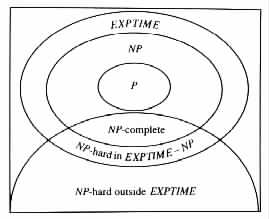
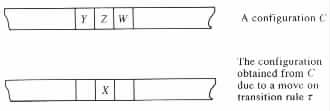
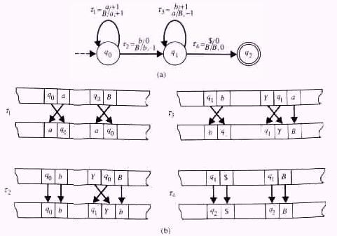

From Nondeterministic to Deterministic Time
The Satisfiability Problem
The Structure of Ex
The Variables of Ex
The Structure of Econfi
The Structure of Einit
The Structure of Erulei and Eaccept
The Structure of Efollowi
The 3-Satisfiability Problem
The subclass NP , of the class of problems that can be solved nondeterministically in polynomial time, seems to play a central role in the investigation of intractability. By definition, NP contains the class P of those problems that can be decided deterministically in polynomial time, and by Corollary 5.3.1 the class NP is contained in the class EXPTIME of those problems that can be decided deterministically in exponential time. Moreover, by Theorem 5.2.1, P is properly contained in EXPTIME (see Figure 5.3.1).
|

|
In particular, if it is discovered that NP is not equal to P, as is widely being conjectured, then NP is likely to provide some of the easiest problems (namely, the NP-complete problems) for proving the intractability of new problems by means of reducibility. On the other hand, if NP is discovered to equal P, then many important problems, worked on without success for several decades, will turn out to be solvable in polynomial time.
From Nondeterministic to Deterministic Time
An analysis of the proof of Theorem 2.3.1 implies an exponential increase in the number of states a deterministic finite-state automaton needs for simulating a nondeterministic finite-state automaton. The following corollary implies a similar exponential increase in the number of moves that a deterministic Turing machine requires for simulating a nondeterministic Turing machine.
Corollary 5.3.1 For each nondeterministic Turing transducer M1 there exists an equivalent deterministic Turing transducer M2 with the following characteristics. If M1 halts on a given input x in t moves, then M2 on such an input halts within 2ct moves, where c is some constant that depends only on M1. Moreover, in such a case M2 visits at most 2t locations on each of its auxiliary work tapes.
Proof Let M1 and M2 be the Turing Transducers M1 and M2 of Theorem 4.3.1. Assume that M1 halts on input x in t steps. Then M2 needs to consider only the strings a in {1, ¼, r}* whose lengths are no greater than t or t + 1, depending on whether M1 accepts or rejects x, respectively. The number of such strings a is no greater than (r + 1)t+1.
For each string a = i1 · · · ij in {1, ¼, r}* the Turing transducer M2 uses some number of moves linear in j to derive a and to try simulating a sequence of moves of the form Ce · · · Ca. Consequently, M2 needs some number of moves linear in (r + 1)t+1t. 2ct is therefore a bound on the number of moves, because v = 2log v for every positive integer value v.
Similarly, for each string a = i1 · · · ij the Turing transducer M2 needs j locations in
the first auxiliary work tape for storing a, and at most j locations in each of the other
auxiliary work tapes for recording the content of the corresponding tapes of M1. By
setting the heads of the auxiliary work tapes at their initial positions before starting the
simulation of M1 on a, it is assured that the heads do not depart more than t locations
from their initial positions.
The following theorem shows the existence of NP-complete problems through example.
Definitions A Boolean expression is an expression defined inductively in the following way.
A Boolean expression is said to be satisfiable if its variables can be assigned 0's and 1's so as to provide the value 1 to the expression. The satisfiability problem asks for any given Boolean expression whether it is satisfiable, that is, whether the instance is in the set Lsat = { E | E is a satisfiable Boolean expression }.
Example 5.3.1 The Boolean expression E = x2 Ù x3 Ú (¬x1 Ù x2) is satisfiable by each assignment in which x2 = 1 and x3 = 1, as well as by each assignment in which x1 = 0 and x2 = 1. All the other assignments provide a 0 value to E. (x2 Ù x3) Ú ((¬x1) Ù x2) is a fully parenthesized version of E.
x Ù ¬x is an example of an unsatisfiable Boolean expression.
The proof of the following theorem uses a generic approach.
Theorem 5.3.1 The satisfiability problem is NP-complete.
Proof The satisfiability of any Boolean expression can be checked in polynomial time by nondeterministically assigning some values to the variables of the given expression and then evaluating the expression for such an assignment. Consequently, the problem is in NP.
To show that the satisfiability problem is NP-hard, it is sufficient to demonstrate that each problem K in NP has a polynomially time-bounded, deterministic Turing transducer TK, such that TK reduces K to the satisfiability problem. For the purpose of the proof consider any problem K in NP. Assume that M = <Q, S, G, d, q0, B, F> is a nondeterministic Turing machine with Q Ç (S È G È {¢, $}) = Ø that decides K in T(n) = O(nk) time. Let m denote the number of auxiliary work tapes of M; then TK can be a Turing transducer that on input x outputs a Boolean expression Ex of the following form.
The Boolean expression Ex describes how an accepting computation of M on input x should look. Ex is satisfiable by a given assignment if and only if the assignment corresponds to an accepting computation C0 C1 · · · CT(|x|) of M on input x. The expression has the following structure, where t = T(|x|).
Econf0 Ù · · · Ù Econft states that an accepting computation consists of a sequence C0, ¼ , Ct of t + 1 configurations. Einit states that C0 is an initial configuration.
Erule1 Ù · · · Ù Erulet states that an accepting computation uses a sequence Y of t transition rules. Eaccept states that the last transition rule in Y enters an accepting state. With no loss of generality it is assumed that a transition rule can also be "null", that is, a transition rule on which M can have a move without a change in its configuration. Such an assumption allows us to restrict the consideration only to computations that consist of exactly T(|x|) moves.
Efollowi states that M by using the ith transition rule in Y reaches configuration Ci from configuration Ci-1, 1 £ i £ t.
The Boolean expression Ex uses variables of the form wi,r,j,X and variables of the form wi,t . Each variable provides a statement about a possible property of an accepting computation. An assignment that satisfies Ex provides the value 1 to those variables whose statements hold for the computation in question, and provides the value 0 to those variables whose statements do not hold for that computation.
wi,r,j,X states that X is the jth character of the rth tape in the ith configuration, 0 £ r £ m. r = 0 refers to the input tape, and 1 £ r £ m refers to the rth auxiliary work tape.
wi,t states that t is the transition rule in the ith move of the computation.
The expression Econfi is the conjunction of the following Boolean expressions.
This expression states that a configuration has an input segment with |x| + 3 entries, with each entry having at least one symbol from S È {¢, $} È Q.
 Y } for
1 £ j £ |x| + 3.
Y } for
1 £ j £ |x| + 3.
This expression states that each entry in the input segment has at most one symbol.
This expression states that a configuration has m auxiliary work-tape segments, each segment having t + 1 entries, and each entry having at least one symbol from G È Q.
 Y } for
1 £ r £ m and 1 £ j £ t + 1.
Y } for
1 £ r £ m and 1 £ j £ t + 1.
This expression states that each entry in an auxiliary work-tape segment has at most one symbol.
Similarly, each assignment that satisfies the expressions in parts (c) and (d) above for a specific value r, provides a string of length t + 1 that corresponds to the rth auxiliary work tape of M. The string consists of auxiliary work tape symbols and state symbols. In particular, the string consists of the symbol X at location j if and only if wi,r,j,X is assigned the value 1.
The expression Einit is the conjunction of the following three Boolean expressions.
This expression states that in the initial configuration the input segment consists of the string ¢q0a1 · · · an$, where aj denotes the jth input symbol in x.
This expression states that in the initial configuration each auxiliary work-tape segment contains the initial state q0.
 j } for 1 £ j £ t+1
and 1 £ r £ m.
j } for 1 £ j £ t+1
and 1 £ r £ m.
This expression states that in the initial configuration each auxiliary work-tape segment consists of blank symbols B and at most one appearance of q0.
The Structure of Erulei and Eaccept
The expression Erulei is the conjunction of the following two Boolean expressions.
The expression in part (a) implies, that for each assignment that satisfies Erulei, at least one of the variables wi,t has the value 1. The expression in part (b) implies, that for each assignment that satisfies Erulei, at most one of the variables wi,t has a value 1. Hence, each assignment that satisfies Erulei assigns the value 1 to exactly one of the variables wi,t , namely, to the variable that corresponds to the transition rule t used in the ith move of the computation in question.The expression Eaccept is of the form Ú { wt,t | t takes M into an accepting state }.
The expression Efollowi is the conjunction of the following Boolean expressions.
|

|
The result now follows because TK on input x can compute t = T(|x|) in polynomial
time and then output (the string that represents) Ex.
Example 5.3.2 Let M be the Turing machine in Figure 5.3.3(a).
|

|
Using the notation in the proof of Theorem 5.3.1, the following equalities hold for the M and x above.
| Einit | = | w0,0,1, Ù w0,0,2,q0 Ù w0,0,3,a Ù w0,0,4,b Ù w0,0,5,$ Ù w0,0,2,q0 Ù w0,0,3,a Ù w0,0,4,b Ù w0,0,5,$ | ||
| Ù (w0,1,1,q 0Ú w0,1,2,q0 Ú w0,1,3,q 0Ú w0,1,4,q 0Ú w0,1,5,q0) | ||||
| Ù (w0,1,1,B Ú w0,1,1,q0 Ù w0,1,2,B Ù w0,1,3,B Ù w0,1,4,B Ù w0,1,5,B) | ||||
| Ù (w0,1,2,B Ú w0,1,2,q0 Ù w0,1,1,B Ù w0,1,3,B Ù w0,1,4,B Ù w0,1,5,B) | ||||
| Ù (w0,1,3,B Ú w0,1,3,q0 Ù w0,1,1,B Ù w0,1,2,B Ù w0,1,4,B Ù w0,1,5,B) | ||||
| Ù (w0,1,4,B Ú w0,1,4,q0 Ù w0,1,1,B Ù w0,1,2,B Ù w0,1,3,B Ù w0,1,5,B) | ||||
| Ù (w0,1,5,B Ú w0,1,5,q0 Ù w0,1,1,B Ù w0,1,2,B Ù w0,1,3,B Ù w0,1,4,B) | ||||
| Erulei | = | (wi,t1 Ú wi,t2 Ú wi,t3 Ú wi,t4) | ||
| Ù ¬(wi,t1 Ù wi,t2) | ||||
| Ù ¬(wi,t1 Ù wi,t3) | ||||
| Ù ¬(wi,t1 Ù wi,t4) | ||||
| Ù ¬(wi,t2 Ù wi,t3) | ||||
| Ù ¬(wi,t2 Ù wi,t4) | ||||
| Ù ¬(wi,t3 Ù wi,t4) | ||||
| Eaccept | = | w4,t4 | ||
Figure 5.3.3(b) illustrates the changes in the configurations of M due to the transition
rules t1, t2, t3, and t4.
A slight modification to the the previous proof implies the NP-completeness of the following restricted version of the satisfiability problem.
Definitions A Boolean expression is said to be a literal if it is a variable or a negation of a variable. A Boolean expression is said to be a clause if it is a disjunction of literals. A Boolean expression is said to be in conjunctive normal form if it is a conjunction of clauses. A Boolean expression is said to be in k-conjunctive normal form if it is in conjunctive normal form and each of its clauses consists of exactly k literals. The k-satisfiability problem asks for any given Boolean expression in k-conjunctive normal form whether the expression is satisfiable.
With no loss of generality, in what follows it is assumed that no variable can appear more than once in any given clause.
Theorem 5.3.2 The 3-satisfiability problem is NP-complete.
Proof The expression Ex in the proof of Theorem 5.3.1 needs only slight modifications to have a 3-conjunctive normal form.
The NP-completeness result for the satisfiability problem is of importance in the study of problems for two reasons. First, it exhibits the existence of an NP-complete problem. And, second, it is useful in showing the NP-hardness of some other problems.
 t2 }.
t2 }.